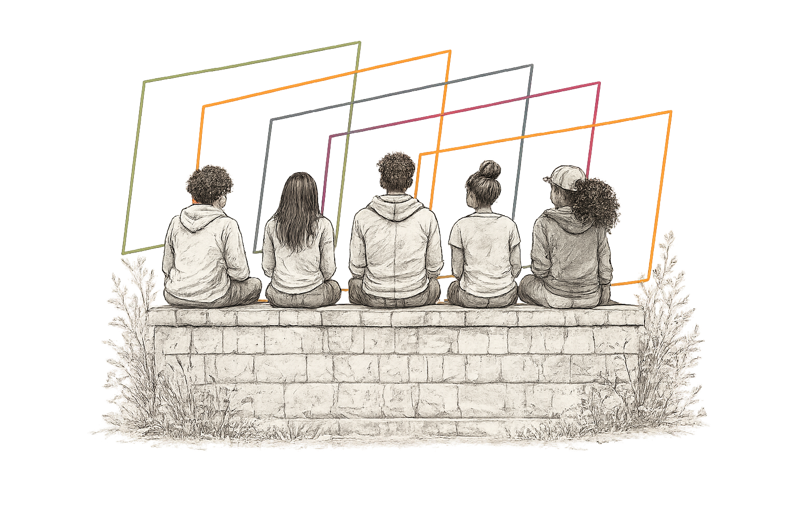

We often ask whether young people have purpose. We rarely ask whether the conditions around them let it be seen and supported.
A portrait of purposeful youth looks at a young person's purpose through eight lenses: what they feel and can imagine, what they get to do, and what the world around them makes possible.
Draw a portraitSee an example
A portrait, not a score
Most tools ask one question about a young person and return one number. That number can make it look like purpose is something a young person either has or lacks, on their own.
Does this young person have purpose?
The answer lives inside the young person.
What helps or blocks their purpose, and who can see it?
The answer includes the people, places, and chances around them.
Purpose is not spread evenly across young people. It is grown or held back by the conditions around them.
Research links purpose, a lasting aim that organizes a young person's life, with better health and well-being. It grows in relation to what young people can see, what they get to do, who recognizes them, and what their surroundings make possible. The eight lenses give adults a shared way to look at all of that.
A portrait of Jordan, 15
Asked "does Jordan have purpose?", most adults would say "sort of." Each part of this picture is one lens.
The purpose is already there. What's thin is practice, recognition, and access, and those are things the adults around Jordan can change.
Jordan is an illustrative composite, not a real person.
Draw a portrait of a young person you know
Picture one young person: a student, a player, your own child. Answer eight short questions and their portrait draws itself. The portrait comes into focus as you answer. What you can't see yet stays out of focus, and that is part of the picture.
Eight lenses of purposeful experience
Each lens looks at a different part of the picture. Open any lens for the full definition and questions to ask.
What is the portrait missing?
The eight lenses are a working draft. If you see a part of young people's purpose they don't cover, propose a new lens. If you have a comment, a question, or a prompt you'd ask a young person, add it to the wall.
We read every note before it goes on the wall. Please don't include a young person's full name or anything that could identify them.
On the wall
Loading…
This space is monitored. Notes that are off-topic, unkind, or could identify a young person will be removed. If you see something that shouldn't be here, use Flag and it will be hidden until we review it.